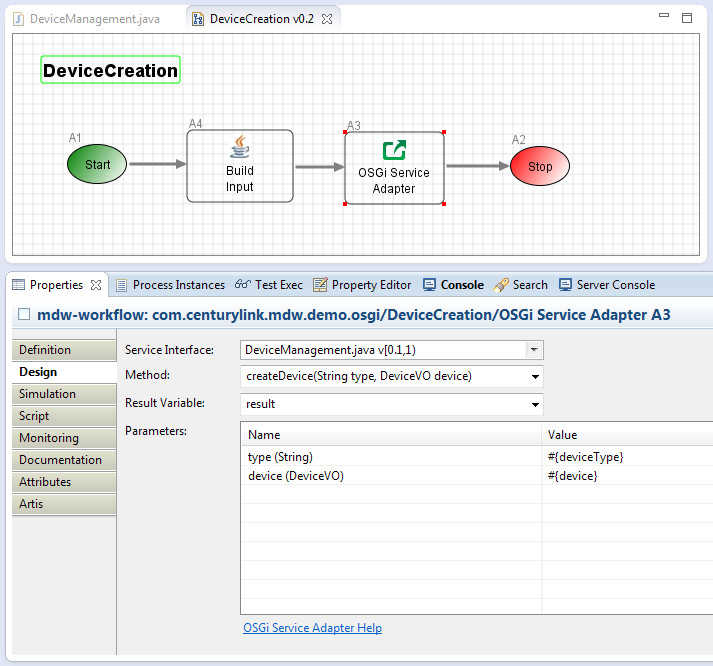

OSGi Service Adapter
The MDW OSGi Service Adapter supports configuration-based invocation of OSGi Services.
The service interface must reside in MDW as a Dynamic Java Workflow Asset.
Typically the interface contract is negotiated with the service provider and is included in the codebase of an OSGi bundle,
but the master copy is also imported into an MDW workflow package and is publicized through a URL like the following:
http://host:port/MDWWeb/resources/com.centurylink.mypackage/IMyService.java
Design Attributes
The basic design parameters for configuring an OSGi Service Adapter are illustrated in the screenshot below.
Note: The workflow assets used in this illustration are available in package "com.centurylink.mdw.demo.osgi", which can be imported into your environment
by right-clicking on your project in Process Explorer view and selecting Import > Workflow Package > Discover > demo > osgi.

Service Interface
Select a Java asset in the TreeCombo widget that identifies the OSGi service interface.
Note: All Java assets are displayed in the selector, but you should select one that contains an interface rather than a class.
And this interface must be registered as a service and provided by some OSGi bundle and available at runtime.
Service Method
Once you've selected a Service Interface, the Method dropdown widget is populated with the available methods.
Note: Designer uses the Eclipse APIs for identifying the interface methods.
In order for the dropdown to be populated correctly, the Dynamic Java interface asset must have been opened in Designer so that Eclipse JDT has a chance to parse the source code.
Result Varable
The Result Variable dropdown is used to associate the return value from the OSGi service method with a process variable.
The options in the Result Variable dropdown include java.lang.String variables in your process as well as all the Document Variables (including java.lang.Objects).
Parameters
The arguments to the service method are bound to runtime values through the MDW binding expressions syntax.
Your expression has implicit access to your process variables, and typically these are referenced in the expressions to populate the method parameters.